17.4 Specifying with lambda
Figure 99 shows a generalized sorting function that consumes a list of values and a comparison function for such values. For convenience, figure 103 reproduces the essence of the definition. The body of sort-cmp introduces two local auxiliary functions: isort and insert. In addition, the figure also comes with two test cases that illustrate the workings of sort-cmp. One demonstrates how the function works on strings and the other one on numbers.
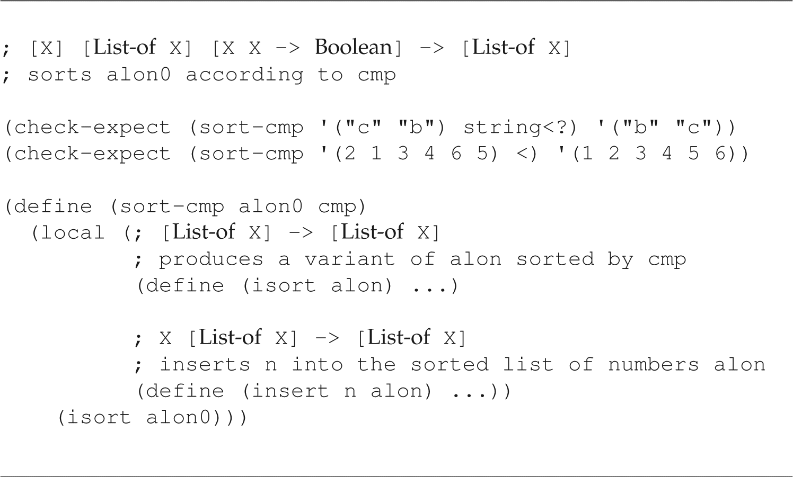
Figure 103: A general sorting function
Now take a quick look at exercise 186. It asks you to formulate check-satisfied tests for sort> using the sorted>? predicate. The former is a function that sorts lists of numbers in descending order; the latter is a function that determines whether a list of numbers is sorted in descending order. Hence, the solution of this exercise is
(check-satisfied (sort> '()) sorted>?)
(check-satisfied (sort> '(12 20 -5)) sorted>?)
(check-satisfied (sort> '(3 2 1)) sorted>?)
(check-satisfied (sort> '(1 2 3)) sorted>?)
The question is how to reformulate the tests for sort-cmp analogously.
Since sort-cmp consumes a comparison function together with a list, the generalized version of sorted>? must take one too. If so, the following test cases might look like this:
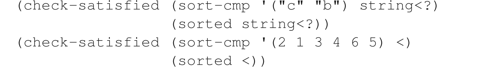
Both (sorted string<?) and (sorted <) must produce predicates. The first one checks whether some list of strings is sorted according to string<?, and the second one whether a list of numbers is sorted via <.
We have thus worked out the desired signature and purpose of sorted:
; [X X -> Boolean] -> [ [List-of X] -> Boolean ]
; produces a function that determines whether
; some list is sorted according to cmp
(define (sorted cmp)
…)
What we need to do now is to go through the rest of the design process.
Let’s first finish the header. Remember that the header produces a value that matches the signature and is likely to break most of the tests/examples. Here we need sorted to produce a function that consumes a list and produces a Boolean. With lambda, that’s actually straightforward:
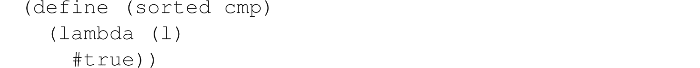
Stop! This is your first function-producing function. Read the definition again. Can you explain this definition in your own words?
Next we need examples. According to our above analysis, sorted consumes predicates such as string<? and <, but clearly, >, <=, and your own comparison functions should be acceptable, too. At first glance, this suggests test cases of the shape
(check-expect (sorted string<?) …)
(check-expect (sorted <) …)
But, (sorted …) produces a function, and, according to exercise 245, it impossible to compare functions.
Hence, to formulate reasonable test cases, we need to apply the result of (sorted …) to appropriate lists. And, based on this insight, the test cases almost formulate themselves; indeed, they can easily be derived from those for sort-cmp in figure 103:
(check-expect [(sorted string<?) '("b" "c")] #true)
(check-expect [(sorted <) '(1 2 3 4 5 6)] #true)
Note Using square instead of parentheses highlights that the first expression produces a function, which is then applied to arguments.
From this point on, the design is quite conventional. What we basically wish to design is a generalization of sorted>? from chapter 9.2; let’s call this function sorted/l. What is unusual about sorted/l is that it “lives” in the body of a lambda inside of sorted:
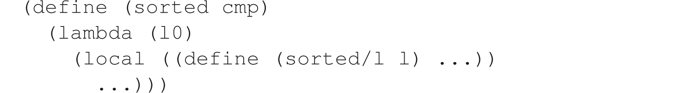
Note how sorted/l is defined locally yet refers to cmp.
Exercise 292. Design the function sorted?, which comes with the following signature and purpose statement:
; [X X -> Boolean] [NEList-of X] -> Boolean
; determines whether l is sorted according to cmp
(check-expect (sorted? < '(1 2 3)) #true)
(check-expect (sorted? < '(2 1 3)) #false)
(define (sorted? cmp l)
#false)
The wish list even includes examples. 
Figure 104 shows the result of the design process. The sorted function consumes a comparison function cmp and produces a predicate. The latter consumes a list l0 and uses a locally defined function to determine whether all the items in l0 are ordered via cmp. Specifically, the locally defined function checks a non-empty list; in the body of local, sorted first checks whether l0 is empty, in which case it simply produces #true because the empty list is sorted.
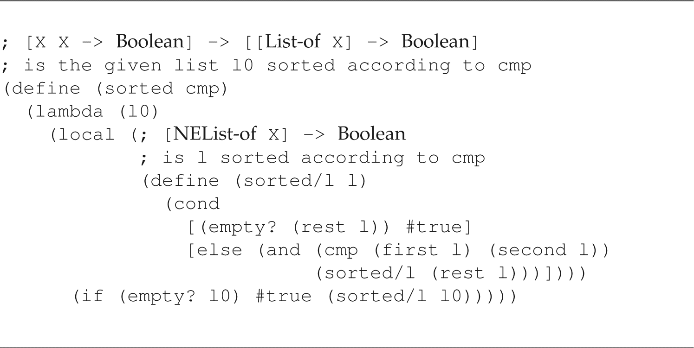
Figure 104: A curried predicate for checking the ordering of a list
Stop! Could you redefine sorted to use sorted? from exercise 292? Explain why sorted/l does not consume cmp as an argument.
The sorted function in figure 104 is a curried version of a function that consumes two arguments: cmp and l0. Instead of consuming two arguments at once, a curried function consumes one argument and then returns a function that consumes the second one.
The verb “curry” honors Haskell Curry, the second person to invent the idea. The first one was Mosses Schönfinkel.
Exercise 186 asks how to formulate a test case that exposes mistakes in sorting functions. Consider this definition:
; List-of-numbers -> List-of-numbers
; produces a sorted version of l
(define (sort-cmp/bad l)
'(9 8 7 6 5 4 3 2 1 0))
Formulating such a test case with check-expect is straightforward.
To design a predicate that exposes sort-cmp/bad as flawed, we need to understand the purpose of sort-cmp or sorting in general. It clearly is unacceptable to throw away the given list and to produce some other list in its place. That’s why the purpose statement of isort says that the function “produces a variant of” the given list. “Variant” means that the function does not throw away any of the items on the given list.
With these thoughts in mind, we can now say that we want a predicate that checks whether the result is sorted and contains all the items from the given list:
; [List-of X] [X X -> Boolean] -> [[List-of X] -> Boolean]
; is l0 sorted according to cmp
; are all items in list k members of list l0
(define (sorted-variant-of k cmp)
(lambda (l0) #false))
The two lines of the purpose statement suggest examples:
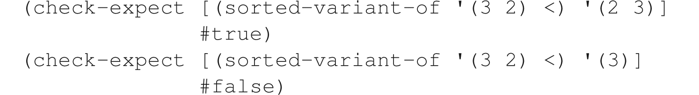
Like sorted, sorted-variant-of consumes arguments and produces a function. For the first case, sorted-variant-of produces #true because the '(2 3) is sorted and it contains all numbers in '(3 2). In contrast, the function produces #false in the second case because '(3) lacks 2 from the originally given list.
A two-line purpose statement suggests two tasks, and two tasks means that the function itself is a combination of two functions:
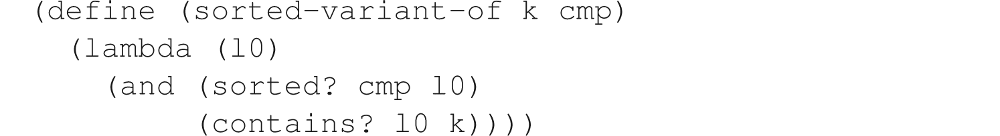
The body of the function is an and expression that combines two function calls. With the call to the sorted? function from exercise 292, the function realizes the first line of the purpose statement. The second call, (contains? k l0), is an implicit wish for an auxiliary function.
We immediately give the full definition:
; [List-of X] [List-of X] -> Boolean
; are all items in list k members of list l
(check-expect (contains? '(1 2 3) '(1 4 3)) #false)
(check-expect (contains? '(1 2 3 4) '(1 3)) #true)
(define (contains? l k)
(andmap (lambda (in-k) (member? in-k l)) k))
On the one hand, we have never explained how to systematically design a function that consumes two lists, and it actually needs its own chapter; see chapter 23. On the other hand, the function definition clearly satisfies the purpose statement. The andmap expression checks that every item in k is a member? of l, which is what the purpose statement promises.
Sadly, sorted-variant-of fails to describe sorting functions properly. Consider this variant of a sorting function:
; [List-of Number] -> [List-of Number]
; produces a sorted version of l
(define (sort-cmp/worse l)
(local ((define sorted (sort-cmp l <)))
(cons (- (first sorted) 1) sorted)))
It is again easy to expose a flaw in this function with a check-expect test that it ought to pass but clearly fails:
(check-expect (sort-cmp/worse '(1 2 3)) '(1 2 3))
Surprisingly, a check-satisfied test based on sorted-variant-of succeeds:
Indeed, such a test succeeds for any list of numbers, not just '(1 2 3), because the predicate generator merely checks that all the items on the original list are members of the resulting list; it fails to check whether all items on the resulting list are also members of the original list.
The easiest way to add this third check to sorted-variant-of is to add a third sub-expression to the and expression:
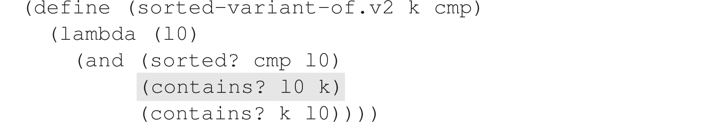
We choose to reuse contains? but with its arguments flipped.
At this point, you may wonder why we are bothering with the development of such a predicate when we can rule out bad sorting functions with plain check-expect tests. The difference is that check-expect checks only that our sorting functions work on specific lists. With a predicate such as sorted-variant-of.v2, we can articulate the claim that a sorting function works for all possible inputs:
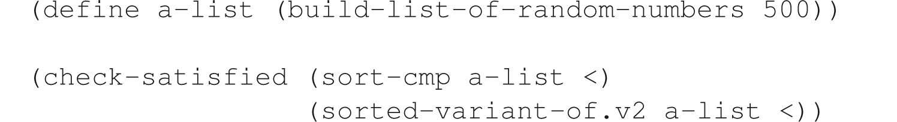
Let’s take a close look at these two lines. The first line generates a list of 500 numbers. Every time you ask DrRacket to evaluate this test, it is likely to generate a list never seen before. The second line is a test case that says sorting this generated list produces a list that (1) is sorted, (2) contains all the numbers on the generated list, and (3) contains nothing else. In other words, it is almost like saying that for all possible lists, sort-cmp produces outcomes that sorted-variant-of.v2 blesses.
Computer scientists call sorted-variant-of.v2 a specification of a sorting function. The idea that all lists of numbers pass the above test case is a theorem about the relationship between the specification of the sorting function and its implementation. If a programmer can prove this theorem with a mathematical argument, we say that the function is correct with respect to its specification. How to prove functions or programs correct is beyond the scope of this book, but a good computer science curriculum shows you in a follow-up course how to construct such proofs.
Exercise 293. Develop found?, a specification for the find function:
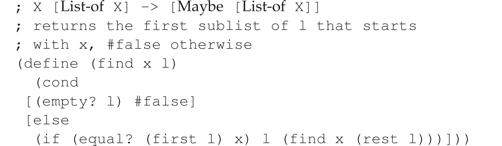
Use found? to formulate a check-satisfied test for find.
Exercise 294. Develop is-index?, a specification for index:
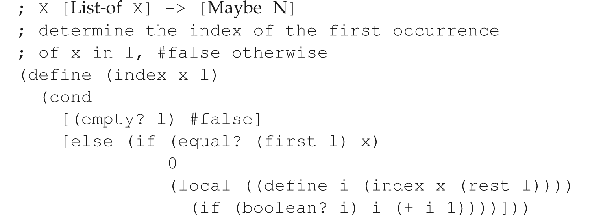
Use is-index? to formulate a check-satisfied test for index.
Exercise 295. Develop n-inside-playground?, a specification of the random-posns function below. The function generates a predicate that ensures that the length of the given list is some given count and that all Posns in this list are within a WIDTH by HEIGHT rectangle:
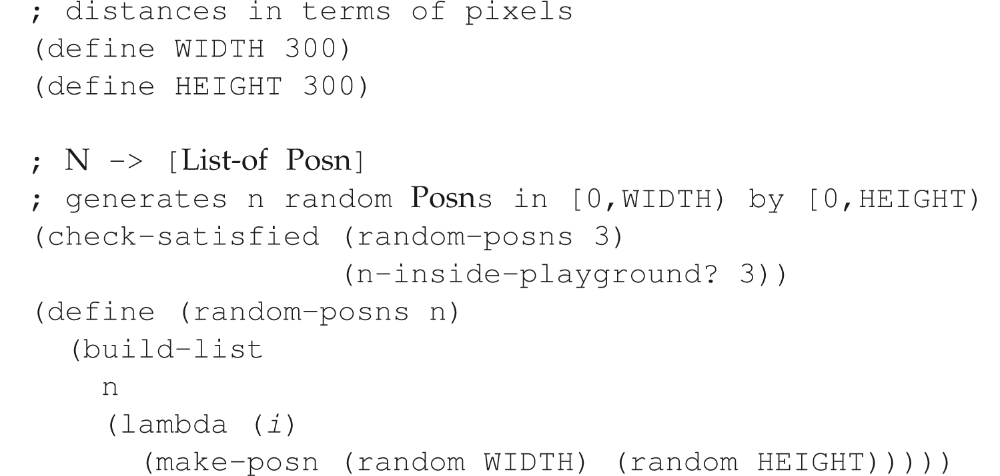
Define random-posns/bad that satisfies n-inside-playground? and does not live up to the expectations implied by the above purpose statement. Note This specification is incomplete. Although the word “partial” might come to mind, computer scientists reserve the phrase “partial specification” for a different purpose.